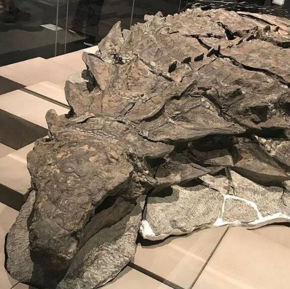
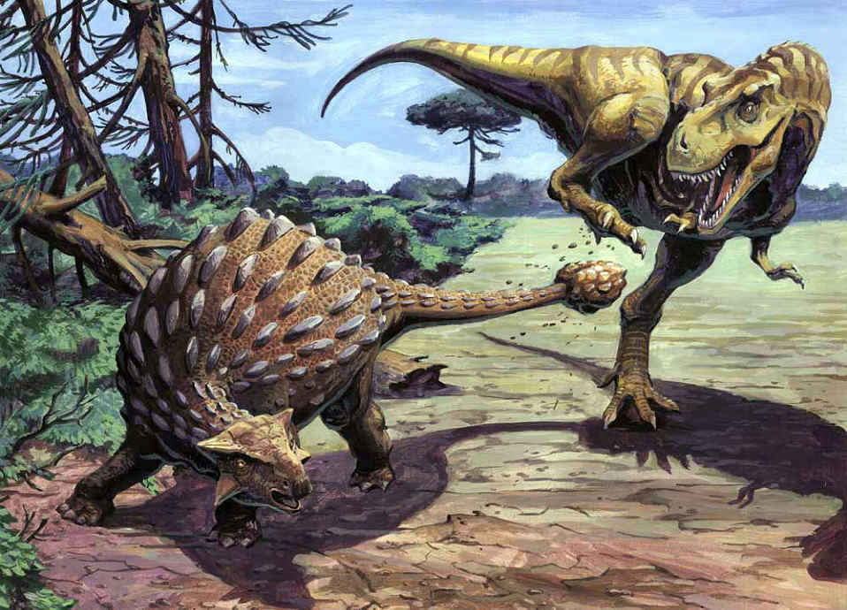
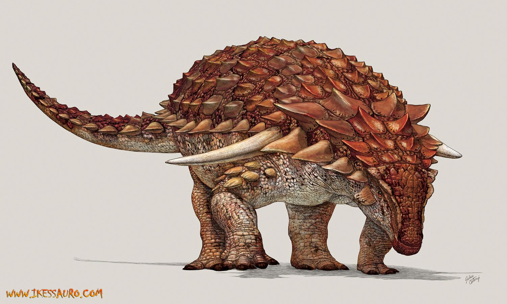
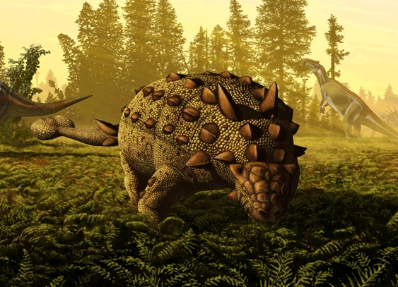
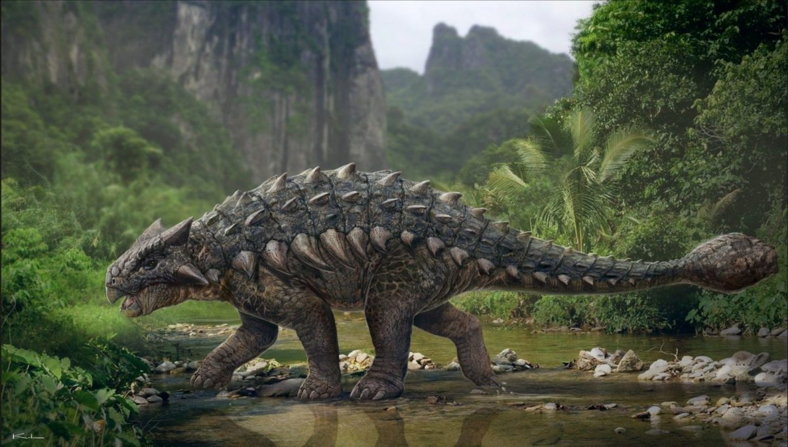
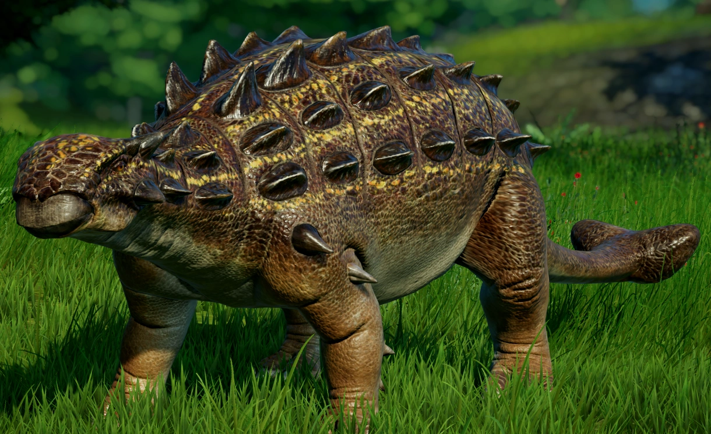
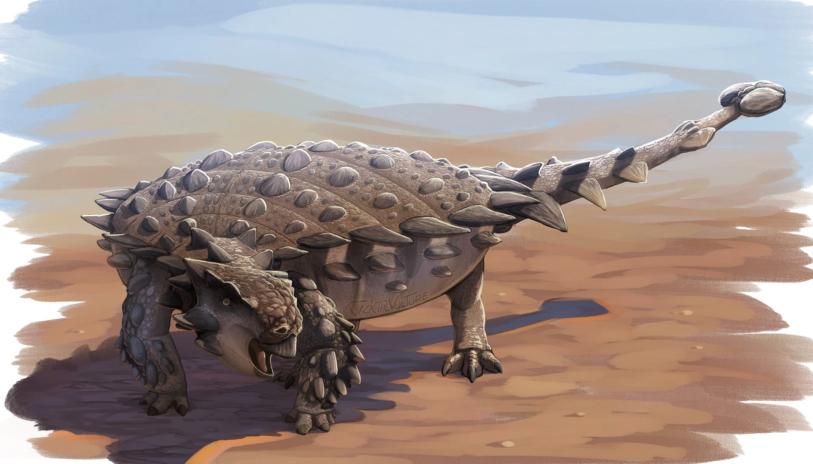
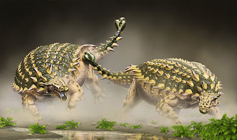

Ankylosauridae é uma família de dinossauros herbívoros conhecidos por suas armaduras ósseas, que viveram durante o final do período Jurássico até o final do Cretáceo, há cerca de 160 a 66 milhões de anos. Esses dinossauros são frequentemente descritos como "tanques blindados" da pré-história devido à sua robusta cobertura de placas ósseas (osteodermos) e uma grande clava (massa) na cauda, que usavam para se defender contra predadores.
Os anquilossaurídeos são um grupo dentro da subordem Ornithischia, conhecidos por seus corpos largos, pernas curtas e uma armadura corporal quase impenetrável. Entre os membros mais famosos desta família está o Ankylosaurus, um dos últimos e maiores anquilossaurídeos, que viveu na América do Norte.
Armadura Corporal: A característica mais marcante dos anquilossaurídeos é sua armadura, composta de grandes placas ósseas (osteodermos) e nódulos que cobriam quase todo o corpo, incluindo o dorso, pescoço, e até as pálpebras. Essa armadura os protegia de predadores carnívoros como o Tyrannosaurus rex.
Clava Caudal: Muitos anquilossaurídeos possuíam uma grande clava na extremidade da cauda, composta por ossos fundidos, que provavelmente usavam como uma arma poderosa contra predadores. Com a cauda rígida e forte, esses dinossauros podiam balançar a clava como um martelo, causando ferimentos sérios em qualquer atacante.
Corpo Robusto: Os anquilossaurídeos eram dinossauros de corpo baixo, com um perfil largo e achatado. Eles andavam sobre quatro patas, com as patas traseiras ligeiramente mais longas que as dianteiras, o que lhes dava uma postura sólida e estável. Este formato corporal os ajudava a se manter próximos ao solo e, junto com sua armadura, dificultava o ataque de grandes predadores.
Herbívoros Pacíficos: Apesar de sua aparência ameaçadora, os anquilossaurídeos eram herbívoros. Eles possuíam dentes pequenos e em forma de folha, projetados para mastigar vegetação baixa, como samambaias, cicadáceas e plantas com flores. Seu longo sistema digestivo provavelmente ajudava a processar essa vegetação resistente.
Os anquilossaurídeos eram defensores passivos, usando sua pesada armadura para se protegerem de predadores. Quando ameaçados, ao invés de fugir rapidamente, como alguns dinossauros herbívoros faziam, eles provavelmente se agachavam, usando sua armadura como barreira. Se um predador se aproximasse demais, a clava caudal poderia ser usada para desferir golpes poderosos, possivelmente quebrando ossos ou ferindo gravemente o atacante.
Embora sua velocidade fosse limitada por causa de suas pernas curtas e corpo pesado, esses dinossauros eram muito bem protegidos, e poucos predadores ousavam atacá-los diretamente.
América do Norte: Onde viveram espécies como Ankylosaurus e Euoplocephalus.
Ásia: Fósseis de Pinacosaurus e Tarchia foram encontrados em grandes números em formações desérticas da Mongólia e da China.
Europa: Embora menos comuns, também foram encontrados restos fragmentários de anquilossaurídeos em algumas regiões europeias.
O Ankylosaurus é o anquilossaurídeo mais famoso e um dos maiores, medindo cerca de 6 a 8 metros de comprimento e pesando até 8 toneladas. Viveu no final do Cretáceo, na América do Norte. Possuía uma clava caudal robusta e uma armadura muito desenvolvida, sendo um dos últimos dinossauros antes da extinção em massa no fim do Cretáceo. O Ankylosaurus foi descrito pela primeira vez em 1908 pelo paleontólogo americano Barnum Brown, famoso por sua descoberta do Tyrannosaurus rex. Ele encontrou os primeiros fósseis do Ankylosaurus em Montana.
O Euoplocephalus é um dos anquilossaurídeos mais bem documentados, com muitos fósseis encontrados. Ele viveu na América do Norte durante o Cretáceo Superior, medindo cerca de 6 metros de comprimento. Além da armadura pesada, possuía espinhos nos flancos e uma clava na cauda. Não há evidências conclusivas sobre se o Euoplocephalus vivia em grupos ou era um animal solitário. No entanto, como muitos herbívoros de grande porte, ele poderia ter vivido em pequenos grupos para facilitar a proteção mútua. Mesmo assim, sua armadura pesada sugere que ele era capaz de se defender sozinho.
O Pinacosaurus viveu no que hoje é a Mongólia, também durante o Cretáceo Superior. Era menor do que outros anquilossaurídeos, medindo cerca de 5 metros de comprimento. Seus fósseis são encontrados frequentemente em grandes grupos, sugerindo que os jovens podem ter vivido em bandos para proteção mútua. Em algumas descobertas fósseis, os paleontólogos notaram que as placas de armadura do Euoplocephalus variavam em tamanho e distribuição, indicando que cada indivíduo pode ter tido uma distribuição ligeiramente diferente de placas de acordo com sua idade ou estágio de crescimento.
O Tarchia foi um dos maiores e mais tardios dinossauros da família Ankylosauridae, conhecido por sua armadura protetora e cauda com clava. Ele viveu no final do período Cretáceo, há cerca de 70 a 66 milhões de anos, em regiões que hoje correspondem à Mongólia e áreas vizinhas. Descoberto no famoso Deserto de Gobi, o Tarchia é considerado um dos últimos anquilossaurídeos a existir antes da extinção em massa que pôs fim à era dos dinossauros. O Tarchia é conhecido por ter um dos crânios mais fortemente blindados entre os anquilossaurídeos. Isso sugere que sua cabeça era uma área especialmente vulnerável a ataques, e ele desenvolveu uma proteção adicional para se defender.
Assim como muitos outros dinossauros, os anquilossaurídeos foram extintos no final do período Cretáceo, durante o evento de extinção em massa causado por um asteroide há cerca de 66 milhões de anos. Esse evento eliminou a maioria das grandes espécies de dinossauros da Terra, incluindo os bem protegidos anquilossaurídeos.
O Ankylosaurus, com sua aparência de tanque, é frequentemente comparado a animais modernos, como o tatu ou o porco-espinho, por causa de sua armadura natural.
Fósseis bem preservados de anquilossaurídeos revelaram até mesmo impressões da pele e detalhes sobre a estrutura de suas placas ósseas.
A clava caudal de alguns anquilossaurídeos era capaz de gerar uma força impressionante, o que levanta a hipótese de que ela poderia quebrar ossos de grandes predadores como o Tyrannosaurus rex.